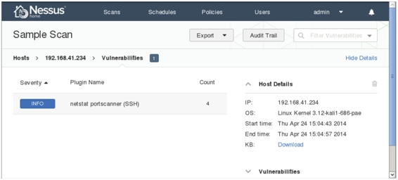

5.1 使用Nessus
Nessus号称是世界上最流行的漏洞扫描程序，全世界有超过75000个组织在使用它。该工具提供完整的电脑漏洞扫描服务，并随时更新其漏洞数据库。Nessus不同于传统的漏洞扫描软件，Nessus可同时在本机或远端上遥控，进行系统的漏洞分析扫描。Nessus也是渗透测试重要工具之一。所以，本章将介绍安装、配置并启动Nessus。
5.1.1 安装和配置Nessus
为了定位在目标系统上的漏洞，Nessus依赖feeds的格式实现漏洞检查。Nessus官网提供了两种版本：家庭版和专业版。
- 家庭版：家庭版是供非商业性或个人使用。家庭版比较适合个人使用，可以用于非专业的环境。
- 专业版：专业版是供商业性使用。它包括支持或附加功能，如无线并发连接等。
本小节使用Nessus的家庭版来介绍它的安装。具体操作步骤如下所示。
（1）下载Nessus软件包。Nessus的官方下载地址是http://www.tenable.com/products/ nessus/select-your-operating-system。在浏览器中输入该地址，将显示如图5.1所示的界面。
图5.1 Nessus下载界面
（2）在该界面左侧的Download Nessus下，单击Linux，并选择下载Nessus-5.2.6- debian6_i386.deb包，如图5.2所示。
图5.2 下载Linux系统的Nessus
（3）单击Nessus-5.2.6-debian6_i386.deb包后，将显示如图5.3所示的界面。
图5.3 接收许可证
（4）在该界面单击Agree按钮，将开始下载。然后将下载的包，保存到自己想要保存的位置。
（5）下载完Nessus软件包，现在就可以来安装该工具。执行命令如下所示：
root@kali:~# dpkg -i Nessus-5.2.6-debian6_i386.deb
Selecting previously unselected package nessus.
(正在读取数据库 … 系统当前共安装有 276380 个文件和目录。)
正在解压缩 nessus (从 Nessus-5.2.6-debian6_i386.deb) …
正在设置 nessus (5.2.6) …
nessusd (Nessus) 5.2.6 [build N25116] for Linux
Copyright (C) 1998 - 2014 Tenable Network Security, Inc
Processing the Nessus plugins…
[##################################################]
All plugins loaded
- You can start nessusd by typing /etc/init.d/nessusd start
- Then go to https://kali:8834/ to configure your scanner
看到以上类似的输出信息，表示Nessus软件包安装成功。Nessus默认将被安装在/opt/nessus目录中。
（6）启动Nessus。执行命令如下所示：
root@kali:~# /etc/init.d/nessusd start
$Starting Nessus : .
从输出的信息中可以看到Nessus服务已经启动。
注意：使用Nessus之前，必须有一个注册码。关于获取激活码的方法在第2章已经介绍过，这里就不再赘述。
（7）激活Nessus。执行命令如下所示：
root@Kali:~# /opt/nessus/bin/nessus-fetch --register 9CC8-19A0-01A7-D4C1- 4521
（8）为Nessus创建一个用户。执行命令如下所示：
root@Kali:~# /opt/nessus/sbin/nessus-adduser
（9）登录Nessus。在浏览器中输入地址https://主机IP:8834或https://主机名:8834。
通过以上步骤的详细介绍，Nessus就配置好了，现在就可以使用Nessus扫描各种的漏洞。使用Nessus扫描漏洞之前需要新建扫描策略和扫描任务，为了后面能顺利的扫描各种漏洞，接下来将介绍新建策略和扫描任务的方法。
1. 添加策略
添加策略的具体操作步骤如下所示。
（1）登录Nessus。Nessus是一个安全链接，所以需要添加信任后才允许登录。在浏览器地址栏中输入https://192.168.41.234:8834/，将显示如图5.4所示的界面。
图5.4 连接不被信任
（2）在该界面单击I Understand the Risks按钮，将显示如图5.5所示的界面。
图5.5 了解风险
（3）该界面显示了所存在的风险，单击Add Exception按钮，将显示如图5.6所示的界面。
图5.6 添加安全例外
（4）在该界面单击Confirm Security Exception按钮，将显示如图5.7所示的界面。
图5.7 Nessus登录界面
（5）在该界面输入前面创建的用户名和密码，然后单击Sign In按钮，将显示如图5.8所示的界面。
图5.8 Nessus主界面
（6）在该界面使用鼠标切换到Policies选项卡上，将显示如图5.9所示的界面。
图5.9 策略界面
（7）在该界面单击New Policy按钮，将显示如图5.10所示的界面。
图5.10 策略向导
（8）该界面选择创建策略类型。Nessus默认支持10种策略类型，在策略类型上有绿色条的表示订阅。这里选择Advanced Policy类型，单击该图标后，将显示如图5.11所示的界面。
图5.11 新建策略
（9）在该界面设置策略名、可见性和描述信息（可选项）。这里设置策略名为Local VulnerabilityAssessment、可见性为private。然后单击左侧的Plugins标签，将显示如图5.12所示的界面。在图5.11中Visibility有两个选项。
图5.12 插件程序
- private：仅自己能使用该策略扫描。
- shared：其他用户也能使用该策略扫描。
（10）该界面显示了所有插件程序，默认全部是启动的。在该界面可以单击Disable All按钮，禁用所有启动的插件程序。然后指定需要启动的插件程序，如启动Debian Local Security Checks和Default Unix Accounts插件程序，启动后如图5.13所示。
图5.13 启动的插件程序
（11）在该界面单击Save按钮，将显示如图5.14所示的界面。
图5.14 新建的策略
（12）从该界面可以看到新建的策略Local Vulnerability Assessment，表示该策略已创建成功。
2. 新建扫描任务
策略创建成功后，必须要新建扫描任务才能实现漏洞扫描。下面将介绍新建扫描任务的具体操作步骤。
（1）在图5.14中，将鼠标切换到Scans选项卡上，将显示如图5.15所示的界面。
图5.15 扫描任务界面
（2）从该界面可以看到当前没有任何扫描任务，所以需要添加扫描任务后才能扫描。在该界面单击New Scan按钮，将显示如图5.16所示。
图5.16 新建扫描任务
（3）在该界面设置扫描任务名称、使用策略、文件夹和扫描的目标。这里分别设置为Sample Scan、Local Vulnerability Assessment（前面新建的策略）、My Scans和192.168.41.0/24。然后单击Launch按钮，将显示如图5.17所示的界面。
图5.17 运行扫描任务
（4）从该界面可以看到扫描任务的状态为Running（正在运行），表示Sample Scan扫描任务添加成功。如果想要停止扫描，可以单击（停止一下）按钮。如果暂停扫描任务，单击按钮。
5.1.2 扫描本地漏洞
在前面介绍了Nessus的安装、配置、登录及新建策略和扫描任务，现在可以开始第一次测试组的安全漏洞。对于新建策略和扫描任务这里就不再赘述，本小节中只列出扫描本地漏洞所需添加的插件程序及分析扫描信息。
【实例5-1】扫描本地漏洞具体操作步骤如下所示。
（1）新建名为Local Vulnerability Assessment策略。
（2）添加所需的插件程序。
- Ubuntu Local Security Checks：扫描本地Ubuntu安全检查。
- Default Unix Accounts：扫描默认Unix账户。
（3）新建名为Sample Scan扫描任务。
（4）扫描漏洞。扫描任务执行完成后，将显示如图5.18所示的界面。
图5.18 扫描完成
（5）在该界面双击扫描任务名称Sample Scan，将显示扫描的详细信息，如图5.19所示。
图5.19 扫描的详细信息
（6）从该界面可以看到总共扫描了三台主机。扫描主机的漏洞情况，可以查看Vulnerability列，该列中的数字表示扫描到的信息数。右侧显示了扫描的详细信息，如扫描任务名称、状态、策略、目标主机和时间等。右下角以圆形图显示了漏洞的危险情况，分别使用不同颜色显示漏洞的严重性。本机几乎没任何漏洞，所以显示是蓝色（Info）。关于漏洞的信息使用在该界面可以单击Host列中的任何一个地址，显示该主机的详细信息，包括IP地址、操作系统类型、扫描的起始时间和结束时间等。本例中选择192.168.41.234地址，如图5.20所示。

图5.20 漏洞信息
（7）在该界面单击INFO按钮，将显示具体的漏洞信息，如图5.21所示。
图5.21 漏洞详细信息
（8）该界面显示了漏洞的描述信息及扫描到的信息。例如，该主机上开启了68、8834和15774等端口。使用Nessus还可以通过导出文件的方式查看漏洞信息，导出的文件格式包括Nessus、PDF、HTML、CSV和Nessus DB。导出文件的方式如下所示：
在图5.20中单击Export按钮，选择导出文件的格式。这里选择PDF格式，单击PDF命令，将显示如图5.22所示的界面。
图5.22 可用的内容
（9）该界面分为两部分，包括Available Content（可用的内容）和Report Content（报告内容）。该界面显示了导出的PDF文件中可包括的内容有主机摘要信息、主机漏洞和插件漏洞。在图5.22中将要导出的内容用鼠标拖到Report Content框中，拖入内容后将显示如图5.23所示的界面。
图5.23 导出的内容
（10）在该界面显示了将要导出的内容。此时单击Export按钮，将显示如图5.24所示的界面。
图5.24 下载界面
（11）在该界面单击Save File按钮，指定该文件的保存位置，即PDF文件导出成功。
5.1.3 扫描网络漏洞
如果用户想要使用Nessus攻击一个大范围的漏洞，需要配置评估漏洞列表并指定获取信息的评估列表。本小节将介绍配置Nessus在目标主机寻找网络漏洞，这些漏洞指目标主机或其他网络协议。
【实例5-2】扫描网络漏洞的具体操作步骤如下所示。
（1）新建名为Internal Network Scan策略。
（2）添加所需的插件程序，如表5-1所示。
表5-1 所需插件程序
| CISCO | 扫描CISCO系统 |
|---|---|
| DNS | 扫描DNS服务器 |
| Default Unix Accounts | 扫描本地默认用户账户和密码 |
| FTP | 扫描FTP服务器 |
| Firewalls | 扫描代理防火墙 |
| Gain a shell remotely | 扫描远程获取的Shell |
| Geeral | 扫描常用的服务 |
| Netware | 扫描网络操作系统 |
| Peer-To-Peer File Sharing | 扫描共享文件检测 |
| Policy Compliance | 扫描PCI DSS和SCAP信息 |
| SCADA | 扫描设置管理工具 |
| SMTP Problems | 扫描SMTP问题 |
| SNMP | 扫描SNMP相关信息 |
| Service Detection | 扫描服务侦察 |
| Settings | 扫描基本设置 |
（3）新建名为Network Scan扫描任务。
（4）扫描结果如图5.25所示。

图5.25 网络扫描结果
（5）从该界面可以看到有两个比较严重的漏洞。如果想要详细地分析该漏洞，建议将该信息使用文件的形式导出。
5.1.4 扫描指定Linux的系统漏洞
本小节将介绍使用Nessus扫描指定Linux系统上的漏洞。
【实例5-3】扫描指定Linux系统漏洞的具体操作步骤如下所示。
（1）使用Metasploitable 2.0作为目标主机。用户也可以使用其他版本的Linux系统。
（2）新建名为Linux Vulnerability Scan策略。
（3）添加所需的插件程序，如表5-2所示。
表5-2 所需插件程序
| Backdoors | 扫描秘密信息 |
|---|---|
| Brute Force Attacks | 暴力攻击 |
| CentOSo Local Security Checks | 扫描CentOS系统的本地安全漏洞 |
| DNS | 扫描DNS服务器 |
| Debian Local Security Checks | 扫描Debian系统的本地安全漏洞 |
| Default Unix Accounts | 扫描默认Unix用户账号 |
| Denial of Service | 扫描拒绝的服务 |
| FTP | 扫描FTP服务器 |
| Fedora Local Security Checks | 扫描Fedora系统的本地安全漏洞 |
| Firewalls | 扫描防火墙 |
| FreeBSD Local Security Checks | 扫描FreeBSD系统的本地安全漏洞 |
| Gain a shell remotely | 扫描远程获得的Shell |
| General | 扫描漏洞 |
| Gentoo Local Security Checks | 扫描Gentoo系统的本地安全漏洞 |
| HP-UX Local Security Checks | 扫描HP-UX系统的本地安全漏洞 |
| Mandriva Local Security Checks | 扫描Mandriva系统的本地安全漏洞 |
| Misc | 扫描复杂的漏洞 |
| Red Hat Local Security Checks | 扫描Red Hat系统的本地安全漏洞 |
| SMTP Porblems | 扫描SMTP问题 |
| SNMP | 扫描SNMP漏洞 |
| Scientific Linux Local Security Checks | 扫描Scientific Linux系统的本地安全漏洞 |
| Slackware Local Security Checks | 扫描Slackware系统的本地安全漏洞 |
| Solaris Local Security Checks | 扫描Solaris系统的本地安全漏洞 |
| SuSE Local Security Checks | 扫描SuSE系统的本地安全漏洞 |
| Ubuntu Local Security Checks | 扫描Ubuntu系统的本地安全漏洞 |
| Web Servers | 扫描Web服务器 |
（4）新建名为Linux Vulnerability Scan扫描任务。
（5）扫描漏洞，扫描结果如图5.26所示。
图5.26 指定Linux系统扫描结果
（6）从该界面可以看到总共扫描了6台主机上的漏洞信息。其中，主机192.168.41.142上存在7个比较严重的漏洞。关于漏洞的百分比情况，可以从右下角的扇形图中了解到。同样，用户可以使用前面介绍过的两种方法，查看漏洞的详细信息。
5.1.5 扫描指定Windows的系统漏洞
本节将介绍使用Nessus扫描指定Windows系统上的漏洞。
【实例5-4】使用Nessus扫描指定Windows系统漏洞。本例中使用Windows 7系统作为目标主机。具体扫描步骤如下所示。
（1）新建名为Windows Vulnerability Scan策略。
（2）添加所需的插件程序，如表5-3所示。
表5-3 所需插件程序
| DNS | 扫描DNS服务器 |
|---|---|
| Databases | 扫描数据库 |
| Denial of Service | 扫描拒绝的服务 |
| FTP | 扫描FTP服务器 |
| SMTP Problems | 扫描SMTP问题 |
| SNMP | 扫描SNMP |
| Settings | 扫描设置信息 |
| Web Servers | 扫描Web Servers |
| Windows | 扫描Windows |
| Windows:Microsoft Bulletins | 扫描Windows中微软公告 |
| Windows:User management | 扫描Windows用户管理 |
（3）开始扫描漏洞。扫描结果如图5.27所示。
图5.27 扫描Windows系统的结果
（4）从该界面可以看到主机192.168.41.1的漏洞情况，该主机中存在一个比较严重的漏洞。同样用户可以使用前面介绍过的两种方法查看漏洞的详细信息，进而修改主机中存在的漏洞。